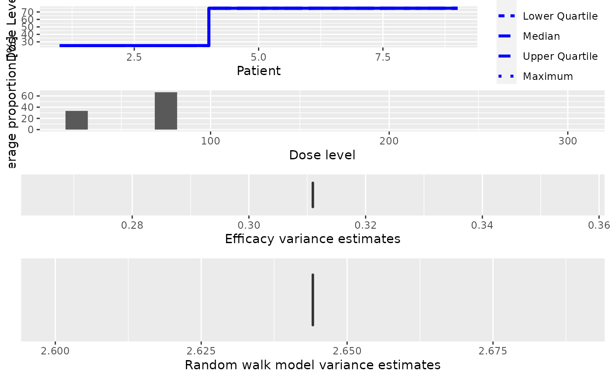

PseudoDualFlexiSimulations
objects in order to summarize them graphically. Possible types of
plots at the moment are: Summary of the trajectory of the simulated trials
Average proportions of the doses tested in patients
The variance of the efficacy responses
The variance of the random walk model
type argument.R/Simulations-methods.R
plot-PseudoDualFlexiSimulations-missing-method.RdThis plot method can be applied to PseudoDualFlexiSimulations
objects in order to summarize them graphically. Possible types of
plots at the moment are:
Summary of the trajectory of the simulated trials
Average proportions of the doses tested in patients
The variance of the efficacy responses
The variance of the random walk model
You can specify one or both of these in the
type argument.
# S4 method for PseudoDualFlexiSimulations,missing plot(x, y, type = c("trajectory", "dosesTried", "sigma2", "sigma2betaW"), ...)
| x | the |
|---|---|
| y | missing |
| type | the type of plots you want to obtain. |
| ... | not used |
A single ggplot object if a single plot is
asked for, otherwise a gridExtra{gTree} object.
##obtain the plot for the simulation results ##If DLE and efficacy responses are considered in the simulations data <- DataDual(doseGrid=seq(25,300,25)) ##First for the DLE model ##The DLE model must be of 'ModelTox' (e.g 'LogisticIndepBeta') class DLEmodel <- LogisticIndepBeta(binDLE=c(1.05,1.8), DLEweights=c(3,3), DLEdose=c(25,300), data=data) ##The efficacy model must be of 'EffFlexi' class Effmodel<- EffFlexi(Eff=c(1.223, 2.513),Effdose=c(25,300), sigma2=c(a=0.1,b=0.1),sigma2betaW=c(a=20,b=50),smooth="RW2",data=data) ##The escalation rule using the 'NextBestMaxGainSamples' class mynextbest<-NextBestMaxGainSamples(DLEDuringTrialtarget=0.35, DLEEndOfTrialtarget=0.3, TDderive=function(TDsamples){ quantile(TDsamples,prob=0.3)}, Gstarderive=function(Gstarsamples){ quantile(Gstarsamples,prob=0.5)}) ## The cohort size, size of 3 subjects mySize <-CohortSizeConst(size=3) ##Deifne the increments for the dose-escalation process ##The maximum increase of 200% for doses up to the maximum of the dose specified in the doseGrid ##The maximum increase of 200% for dose above the maximum of the dose specified in the doseGrid ##This is to specified a maximum of 3-fold restriction in dose-esclation myIncrements<-IncrementsRelative(intervals=c(min(data@doseGrid),max(data@doseGrid)), increments=c(2,2)) ##Specified the stopping rule e.g stop when the maximum sample size of 36 patients has been reached myStopping <- StoppingMinPatients(nPatients=36) ##Specified the design design <- DualResponsesSamplesDesign(nextBest=mynextbest, cohortSize=mySize, startingDose=25, model=DLEmodel, Effmodel=Effmodel, data=data, stopping=myStopping, increments=myIncrements) ##specified the true DLE curve and the true expected efficacy values at all dose levels myTruthDLE<- function(dose) { DLEmodel@prob(dose, phi1=-53.66584, phi2=10.50499) } myTruthEff<- c(-0.5478867, 0.1645417, 0.5248031, 0.7604467, 0.9333009 ,1.0687031, 1.1793942 , 1.2726408 , 1.3529598 , 1.4233411 , 1.4858613 , 1.5420182) ##The true gain curve can also be seen myTruthGain <- function(dose) {return((myTruthEff(dose))/(1+(myTruthDLE(dose)/(1-myTruthDLE(dose)))))} ##options for MCMC options<-McmcOptions(burnin=10,step=1,samples=20) ##The simulations ##For illustration purpose only 1 simulation is produced (nsim=1). mySim<-simulate(object=design, args=NULL, trueDLE=myTruthDLE, trueEff=myTruthEff, trueSigma2=0.025, trueSigma2betaW=1, mcmcOptions=options, nsim=1, seed=819, parallel=FALSE) ##plot this simulated results print(plot(mySim))#> #> #>